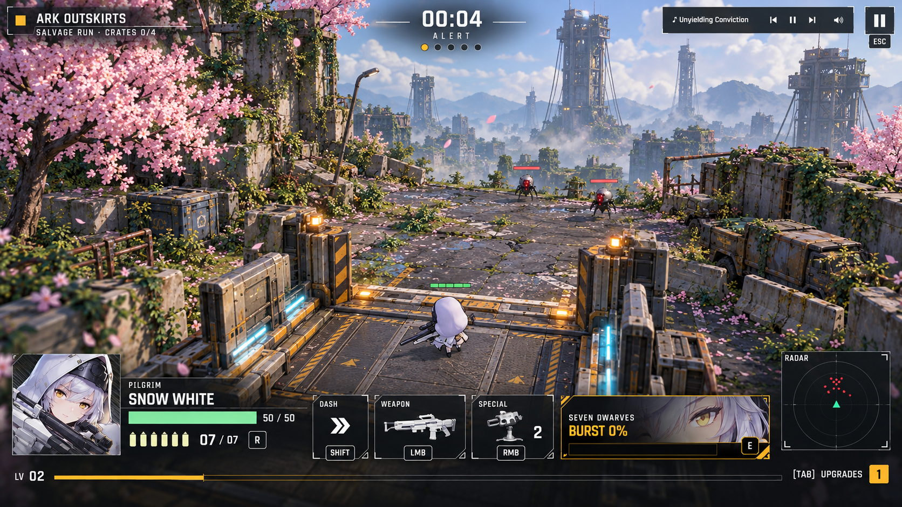

Lift up
Must show: you arrive on a lift that rises out of a shaft. That lift is your guaranteed way home. The district is big, with old lift towers on the skyline.
Review notes · 2
- Native image is 1672 × 941; requested 1920 × 1080. Preserved without resampling.
- Distant Lure silhouettes drift toward generic round-bodied machines; more skyline towers than the requested two or three. Lift shown flush with the ground; shaft ascent is implied.